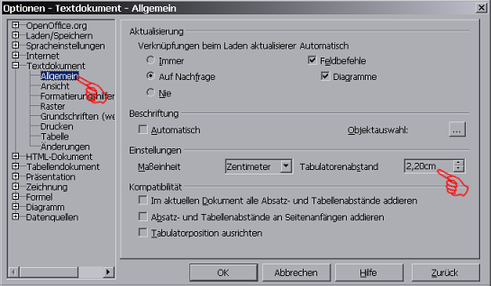
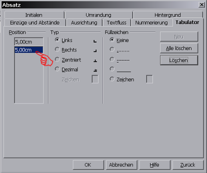
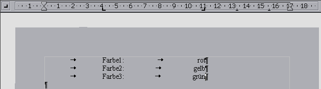
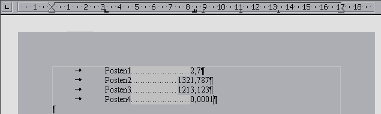

| [zurück] | [Hauptmenü] |
[weiter] |
OpenOffice.org Textdokument
04 - Tabulatoren
Ein Tabulator ist ein sehr nützliches Werkzeug, um Texte
exakt und in einer Flucht ausrichten zu können.
Eingegeben wird er mit der Tabuator-Taste, die auf der
Tastatur meist links von der "Q"-Taste ist. Rund um dieses
Formatierungselement gibt es zahlreiche Einstellungen.
Hierbei spielt das Lineal eine
zentrale Rolle:
Wichtig für das Erstellen eines Tabulators ist das
Zeichen in dem Quadrat ganz links. Es gibt 4 Einstellungen,
die man durch Klicken mit der Maus auf dieses Zeichen
wechseln kann.
- Text wird links ausgerichtet
- Text wird rechts ausgerichtet
 Zahlen werden bei der Kommastelle exakt
ausgerichtet
Zahlen werden bei der Kommastelle exakt
ausgerichtet- Text wird mittig ausgerichtet

dann wie abgebildet auf Textdokument>Allgemein.
Neuer Tabulator
Ein neuer Tabulator wird so erstellt:- auf der linken Seite des Lineals im Quadrat die gewünschte Art auswählen
- am Lineal klicken um den Tabulator an die gewünschte Stelle zu setzen. Dieser kann danach noch mittels Drag-and-Drop beliebig verschoben werden
Optionen
Bearbeiten kann man einen Tabulator außer durch
Verschieben auch dadurch, dass man den Cursor in den
betreffenden Absatz setzt und im Lineal auf den Tabulator
doppelt klickt. Es erscheint ein Optionen-Dialog für den
Tabulator (den man auch über das Menü:
Format>Absatz>Tabulator erreichen hätte
können. Etwas Geübtere können mit dem Stylisten arbeiten, um
jedem Absatz die exakt gleiche Tabulatorformatierung zukommen
zu lassen.)

Beispiele
Hier zwei Beispiele (zur besseren Verdeutlichung werden Formatierungsszeichen
mittels des ¶-Sybols eingeblendet, was bei der Arbeit an
einem Dokument prinzipiell zu empfehlen ist):
- Hier im ersten Beispiel wird eine Liste von Farben erstellt, wobei bei 4 cm ein linksbündiger Tabulator und bei 11 cm ein rechtsbüundiger ist.


- Im zweiten Beispiel gibt es bei gut 3cm einen linksbündigen Tabulator und bei ca. 8,5cm einen, der Kommastellen untereinander ausrichtet. Zwischen ihnen sind Punkte, damit man die Zeile beim Lesen nicht so leicht verliert. Diese erzielt man dadurch, dass man zuerst alle betreffenden Absätze markiert. Dann werden die Punkte über dem Tabulator-Optionendialog aktiviert: Im Optionendialog klickt man links den Tabulator für ca. 8,5cm an und rechts unter Füllzeichen auf die Punkte. Dann OK.
| [zurück] | [Hauptmenü] |
[weiter] |
© Copyright 2003, Harald Schilly
This documentation is part of "Erste Schritte: OpenOffice.org Textdokument", which is released
under the terms of the PDL.
For full copyright and license info read the index page.